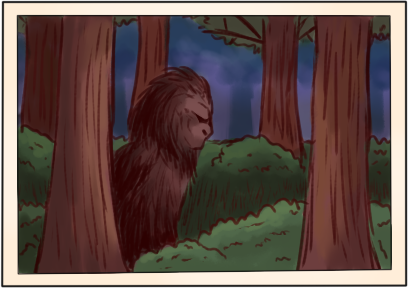
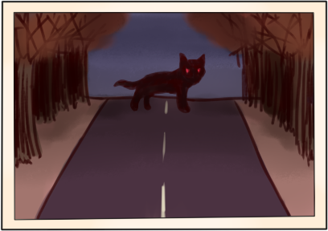

Near the mountains of North Carolina, locals have reported sightings of a large, shaggy creature, standing about 6 feet high, with dark, dirty hair and a flat, human-like face. These sightings are consistent with encounters of the legendary creature Bigfoot, as reported in other parts of the country.
People speak in hushed tones about the half-man, half-ape that stalks the forest, preying on unwary travelers and livestock. In Cleveland County, they call the creature “Knobby”, due to his appearances near Carpenter’s Knob.
Of the more whimsical beasts I have found is the story of the Wampus Cat. The story of its origin varies by location, but it is often described as a large cat like a mountain lion with green eyes and human-like features.
One story ascribed to the Cherokee states that the Wampus Cat was created when a jealous woman was punished for spying on her husband. Whether or not this legend does in fact come from the Cherokee or was simply made up as an explanation is up for debate.
In any case, the legend of the Wampus Cat has been popular in the region for decades.
It is possible that these people refer to a “catawampus”, which simply refers to any unknown creature that might be causing disturbances in the area. The Wampus Cat has been blamed for everything from chickens disappearing from the yard to curdling sourdough with its cries.
On some rare nights, one can observe dancing lights over the peak of Brown Mountain, in the deep Appalachians. These lights appear like bright stars broken free of the heavens to galavant across Brown Mountain’s gentle summit.
The true origin of the lights remains a mystery, and although some have attributed them to train lights or electrical lines, their movement and location above the mountain defies any reasonable explanation.
I myself have yet to see the lights, but I have spoken to many people, most of them academics, who have witnessed the phenomenon. They say it is just as spectacular every time.
In my travels across the Appalachians, I encountered a story of an apparition or creature of some kind that haunts the road near the old stone church in Valle Crucis. Two young men driving through the area were chased by a large, black dog with glowing red eyes, that was said to cackle hideously in the voice of a man.
I’ve spoken to others in the area who had similar encounters, and the reports stay consistent: a large, demonic-looking dog or other such animal chases them down the road until they cross the river, at which point the beast stops and vanishes.